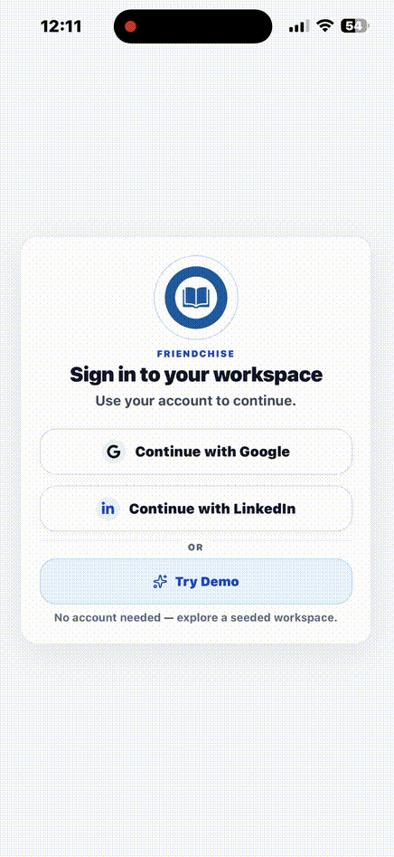

FriendChise Mobile
A native operations app for frontline staff to move through shifts faster by surfacing tasks, procedures, and Scan-to-Task workflows on the device they already carry.
Overview
FriendChise Mobile is the worker-facing side of FriendChise: a focused app for finding shift information, capturing workplace inputs, and turning them into actions without opening a desktop dashboard.
Screenshots / Walkthrough

Task list and organization selection.

Task browsing and scan-to-task workflow.

Sign-in and demo entry point.
Problem
In shift work, the friction is rarely a missing system. It is the time lost hunting for instructions, repeating manual steps, and retyping information that already exists elsewhere.
Mobile-First Workflow
Open the right context
Authentication and org selection land the worker in the correct workspace quickly.
Capture workplace input
Camera images, library photos, and PDFs can feed the scan flow.
AI structures the draft
Scan-to-Task turns captured input into a structured task draft.
Review and continue
The worker edits the draft if needed, saves it, and moves on.
AI Utilities
Scan-to-Task
Workers capture a photo or PDF, the backend extracts the useful content, and the app returns a structured task draft for review before saving.
Flow: photo or document → extraction → draft → review → save.
Value: less manual entry, faster handoff from paper or camera input to an actionable task.
Why it matters
It turns transient workplace information into something the team can track, edit, and act on without rewriting it by hand.
Engineering
Navigation, camera, document picker
Task CRUD, upload, confirm
Org scoping, validation, auth, storage
Token persistence and expiry tracking
Server state and short-lived workflow state
Upload URL, extraction, draft review
The stack is deliberately practical: Expo Router for structure, React Query for server state, Zustand for short-lived workflow state, SecureStore for auth persistence, and the same backend that powers the web product.
Engineering Challenges
OAuth on a native app
Problem → browser redirects were not enough for mobile auth.
Decision → use an auth session, a callback route, and secure token persistence.
Result → the app can hand off to Google / LinkedIn and return cleanly to the app.
Scan input that survives device quirks
Problem → iPhone photos and document uploads can arrive as HEIC, PDFs, or generic MIME types.
Decision → normalize the file on-device, validate size, and fall back to extension-based MIME detection.
Result → the backend receives files the vision pipeline can actually process.
Fast shifts, weak patience
Problem → workers do not have time for slow screens or repeated navigation.
Decision → keep the shell shallow and place tasks and tools in a fixed bottom bar.
Result → the app feels like a shift utility, not a management console.
Product Impact
The mobile app extends the FriendChise workflow to the device workers already carry during a shift, reducing the need to walk back to a desktop or retype information from paper and photos.
My Contribution
I owned the mobile product design, Expo / React Native implementation, auth flow, task and tools screens, Scan-to-Task integration, and the API wiring that keeps mobile aligned with the FriendChise backend.
Implemented / Next
Implemented
OAuth sign in, secure session persistence, org-aware navigation, task browsing, task creation, tools, and Scan-to-Task v1 are in the codebase.
In development / planned
Public release, broader rollout, and further polish around scan workflows are the natural next steps.